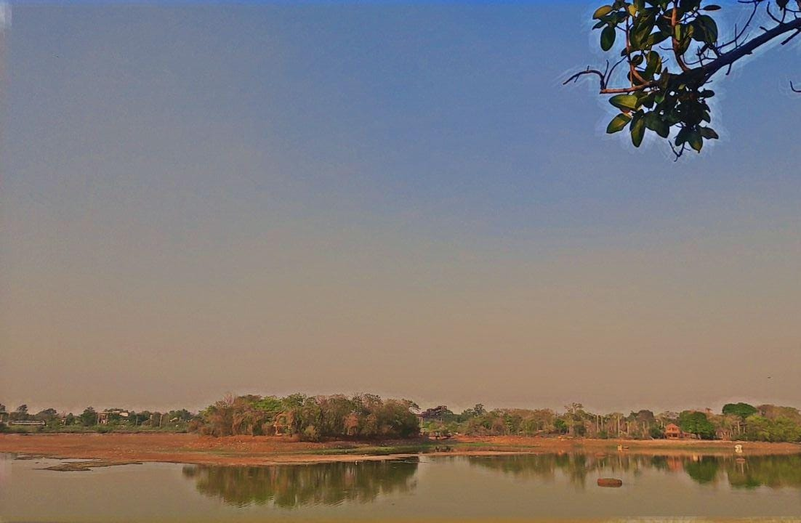

Ramala Lake
Ramala Lake
Ramala tank was built by Gond King Khandkya Ballal Sah at the time of laying the foundations of the town wall. It runs along the north-east section of the wall and was renovated and repaired with fine stone-ghats by Gond King Ram Sah who named it after him. Its embankment provides an excellent promenade popular with the city people. There is also a garden constructed in modern times.
About

Ramala Lake located in the heart of the city is bordered by the city wall on the north eastern corner.Ramala Lake’s catchment area being 148 km2 and the size of the lake- 425,000M2. The lake is suffering from siltation from mining to the north of the city and untreated sewage and other waste from the slums of the city that abut the lake on its eastern shore. It also receives treated sewage from